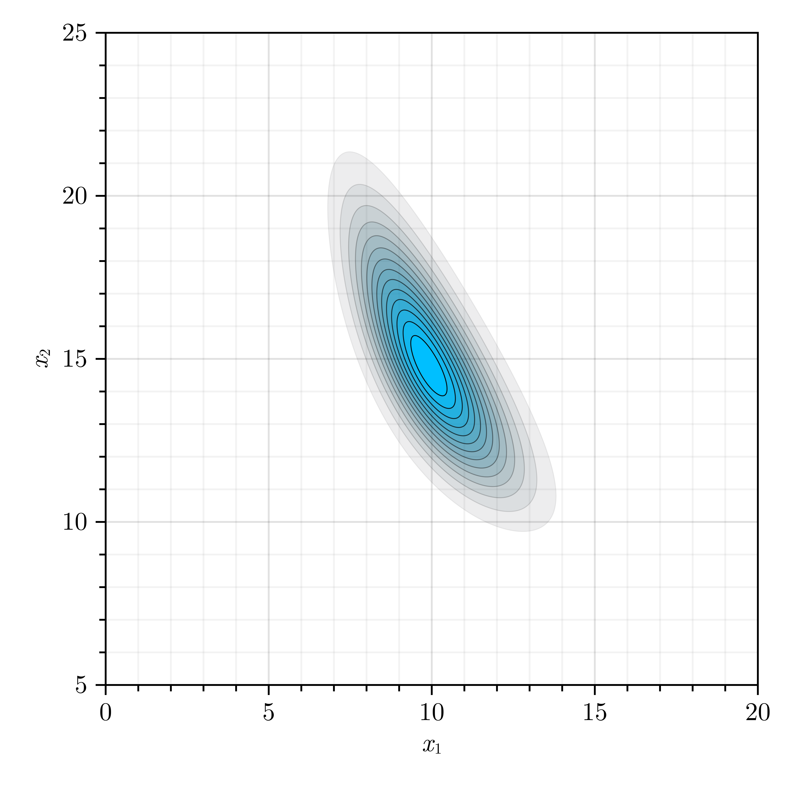
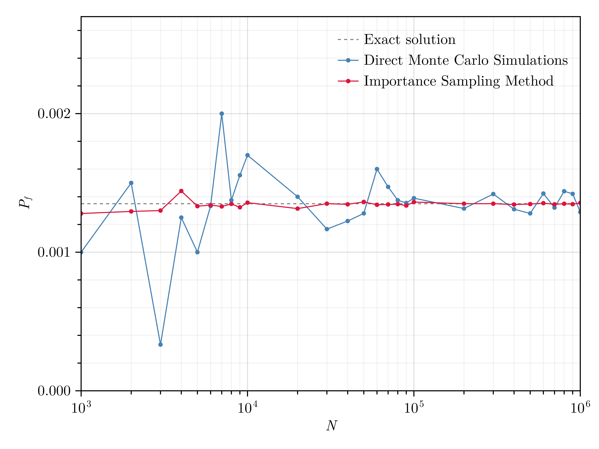
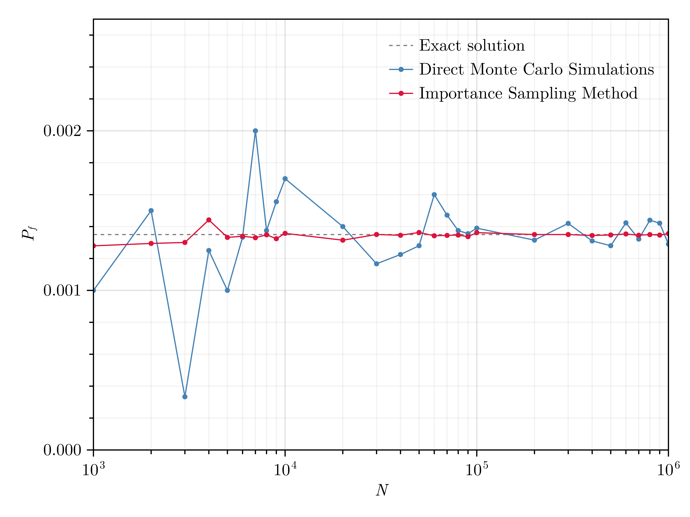
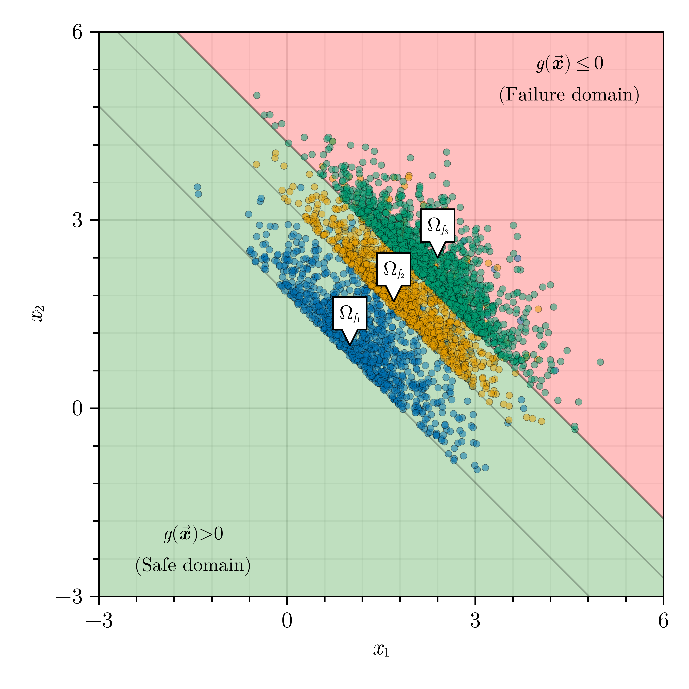

# Define random vector:
X₁ = randomvariable("Gamma", "M", [10, 1.5])
X₂ = randomvariable("Gamma", "M", [15, 2.5])
X = [X₁, X₂]
# Define correlation matrix:
ρˣ = [1 -0.75; -0.75 1]
# Perform Nataf Transformation:
NatafObject = NatafTransformation(X, ρˣ)
# Generate 10000 samples of random vector in X-, Z-, and U-spaces using Latin Hypercube Sampling technique:
XSamples, USamples, ZSamples = rand(NatafObject, 10000, :LHS)

# Compute joint PDF of random vector:
xRange₁ = range(0, 20, 500)
xRange₂ = range(5, 25, 500)
fSamples = [pdf(NatafObject, [x₁, x₂]) for x₁ in xRange₁, x₂ in xRange₂]
# Define random vector:
X₁ = randomvariable("Normal", "M", [0, 1])
X₂ = randomvariable("Normal", "M", [0, 1])
X = [X₁, X₂]
# Define correlation matrix:
ρˣ = [1 0; 0 1]
# Define limit state function:
β = 3
g(x::Vector) = β * sqrt(2) - x[1] - x[2]
# Define reliability problem:
Problem = ReliabilityProblem(X, ρˣ, g)
# Perform reliability analysis using Monte Carlo simulations:
Solution = solve(Problem, MC())
println("MC:")
println("PoF: $(Solution.PoF)")
MC:
PoF: 0.001408

# Define proposal probability density function:
ProposalPDF = MvNormal([β / sqrt(2), β / sqrt(2)], [1 0; 0 1])
# Perform reliability analysis using Monte Carlo simulations:
Solution = solve(Problem, IS(q = ProposalPDF))
println("IS:")
println("PoF: $(Solution.PoF)")
IS:
PoF: 0.0013514056311003642
 
# Define random vector:
X₁ = randomvariable("Normal", "M", [10, 2])
X₂ = randomvariable("Normal", "M", [20, 5])
X = [X₁, X₂]
# Define correlation matrix:
ρˣ = [1 0.5; 0.5 1]
# Define two equivalent limit state functions:
g₁(x::Vector) = x[1] ^ 2 - 2 * x[2]
g₂(x::Vector) = 1 - 2 * x[2] / x[1] ^ 2
# Define reliability problems:
Problem₁ = ReliabilityProblem(X, ρˣ, g₁)
Problem₂ = ReliabilityProblem(X, ρˣ, g₂)
# Perform reliability analysis using Mean-Centered First-Order Second-Moment (MCFOSM) method:
Solution₁ = solve(Problem₁, FORM(MCFOSM()))
Solution₂ = solve(Problem₂, FORM(MCFOSM()))
println("MCFOSM:")
println("β from g₁: $(Solution₁.β)")
println("β from g₂: $(Solution₂.β)")
MCFOSM:
β from g₁: 1.6641005886756874
β from g₂: 4.285714285714286
# Perform reliability analysis using Hasofer-Lind-Rackwitz-Fiessler (HLRF) method:
Solution₁ = solve(Problem₁, FORM(HLRF()))
Solution₂ = solve(Problem₂, FORM(HLRF()))
println("FORM:")
println("β from g₁: $(Solution₁.β)")
println("β from g₂: $(Solution₂.β)")
FORM:
β from g₁: 2.108339767222278
β from g₂: 2.108339767221145
# Perform reliability analysis using improved Hasofer-Lind-Rackwitz-Fiessler (iHLRF) method:
Solution₁ = solve(Problem₁, FORM(iHLRF()))
Solution₂ = solve(Problem₂, FORM(iHLRF()))
println("FORM:")
println("β from g₁: $(Solution₁.β)")
println("β from g₂: $(Solution₂.β)")
FORM:
β from g₁: 2.108339767222278
β from g₂: 2.1083397672221786
# Define random vector:
M₁ = randomvariable("Normal", "M", [250, 250 * 0.3])
M₂ = randomvariable("Normal", "M", [125, 125 * 0.3])
P = randomvariable("Gumbel", "M", [2500, 2500 * 0.2])
Y = randomvariable("Weibull", "M", [40000, 40000 * 0.1])
X = [M₁, M₂, P, Y]
# Define correlation matrix:
ρˣ = [1 0.5 0.3 0; 0.5 1 0.3 0; 0.3 0.3 1 0; 0 0 0 1]
# Define limit state function:
a = 0.190
s₁ = 0.030
s₂ = 0.015
g(x::Vector) = 1 - x[1] / (s₁ * x[4]) - x[2] / (s₂ * x[4]) - (x[3] / (a * x[4])) ^ 2
# Define reliability problem:
Problem = ReliabilityProblem(X, ρˣ, g)
# Perform reliability analysis using Curve-Fitting (CF) method:
Solution = solve(Problem, SORM(CF()))
println("SORM:")
println("β from FORM: $(Solution.FORMSolution.β)")
println("β from SORM: $(Solution.β₂[1]) (Hohenbichler and Rackwitz)")
println("β from SORM: $(Solution.β₂[2]) (Breitung)")
println("PoF from FORM: $(Solution.FORMSolution.PoF)")
println("PoF from SORM: $(Solution.PoF₂[1]) (Hohenbichler and Rackwitz)")
println("PoF from SORM: $(Solution.PoF₂[2]) (Breitung)")
SORM:
β from FORM: 2.466021207396112
β from SORM: 2.341026589022639 (Hohenbichler and Rackwitz)
β from SORM: 2.359553584782698 (Breitung)
PoF from FORM: 0.0068311622479815945
PoF from SORM: 0.00961539874456093 (Hohenbichler and Rackwitz)
PoF from SORM: 0.009148469097924853 (Breitung)
# Perform reliability analysis using point-fitting SORM:
Solution = solve(Problem, SORM(PF()))
println("SORM:")
println("β from FORM: $(Solution.FORMSolution.β)")
println("β from SORM: $(Solution.β₂[1]) (Hohenbichler and Rackwitz)")
println("β from SORM: $(Solution.β₂[2]) (Breitung)")
println("PoF from FORM: $(Solution.FORMSolution.PoF)")
println("PoF from SORM: $(Solution.PoF₂[1]) (Hohenbichler and Rackwitz)")
println("PoF from SORM: $(Solution.PoF₂[2]) (Breitung)")
SORM:
β from FORM: 2.466021207396112
β from SORM: 2.353666599555402 (Hohenbichler and Rackwitz)
β from SORM: 2.369285542624257 (Breitung)
PoF from FORM: 0.0068311622479815945
PoF from SORM: 0.009294637848292406 (Hohenbichler and Rackwitz)
PoF from SORM: 0.00891124387030976 (Breitung)
# Define random vector:
X₁ = randomvariable("Normal", "M", [0, 1])
X₂ = randomvariable("Normal", "M", [0, 1])
X = [X₁, X₂]
# Define correlation matrix:
ρˣ = [1 0; 0 1]
# Define limit state function:
β = 3
g(x::Vector) = β * sqrt(2) - x[1] - x[2]
# Define reliability problem:
Problem = ReliabilityProblem(X, ρˣ, g)
# Perform reliability analysis using Monte Carlo simulations:
Solution = solve(Problem, SSM())
println("SSM:")
println("PoF: $(Solution.PoF)")
SSM:
PoF: 0.0013409868192000001
